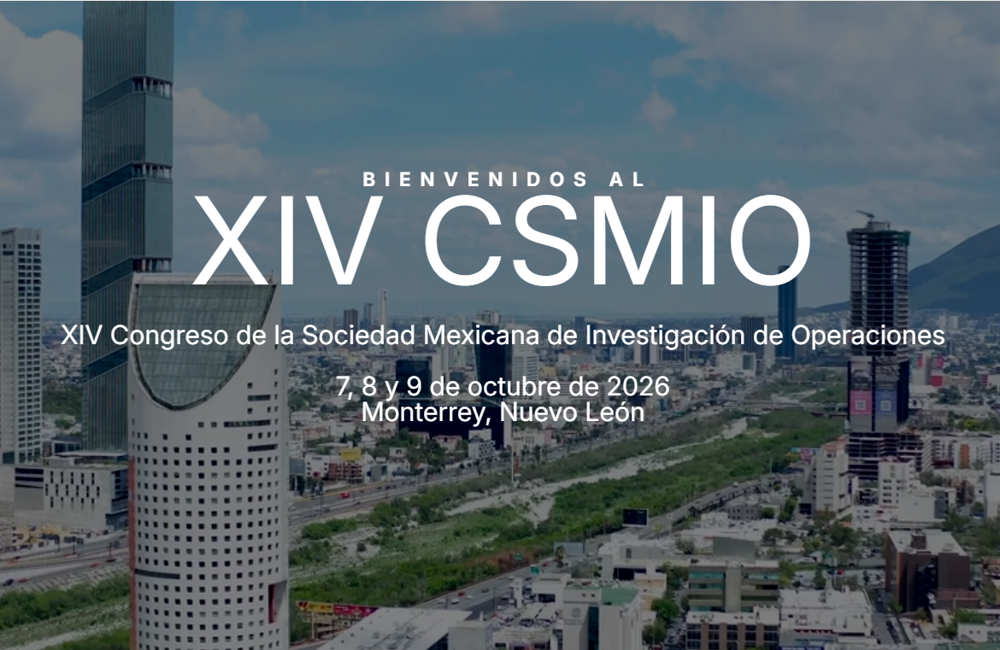
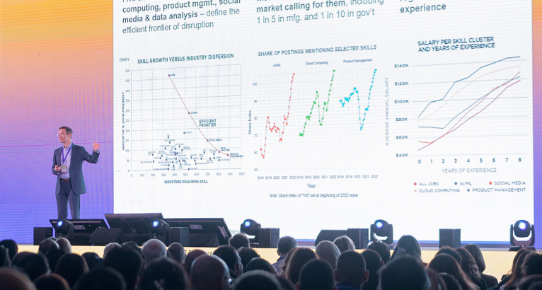
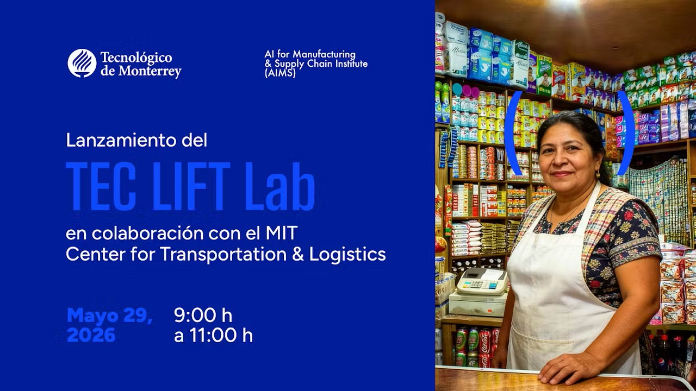
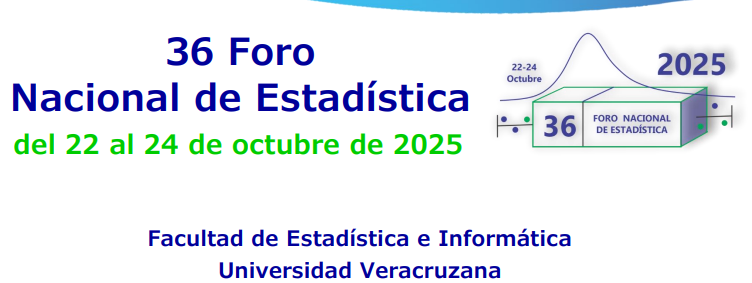
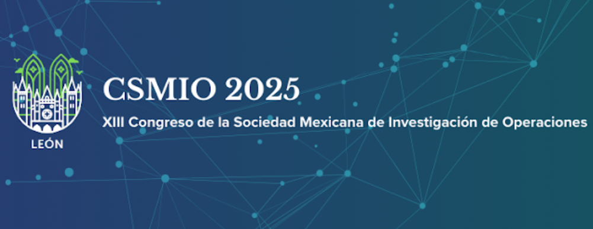

Congreso: IISE Annual Conference & Expo 2027
Fecha: May 22-25, 2027
Lugar: Lousville, Kentucky, USA.
Límite de envío de trabajos: To be announced.

Fecha: 7 a 9 de octubre de 2026.
Sede: Universidad de Monterrey
Lugar: Monterrey, Nuevo León, México.
Límite de envío de trabajos: 30 de junio de 2026.

Fecha: 18 a 23 de octubre de 2026.
Sede: Universidad Autónoma de Tlaxcala
Lugar: Tlaxcala, Tlaxcala, México.
Límite de envío de trabajos: 20 de junio de 2026.

Fecha: 26 a 28 de enero de 2027.
Sede: Tecnológico de Monterrey
Lugar: Monterrey, Nuevo León, México.
Límite de envío de trabajos: 15 de junio de 2026.
Propuesta:
- Encouraging sustainable behaviors among univeristy students using a mobile app with weekly challenges: Insights from Mexico.

Fecha: 29 de mayo de 2026.
Agenda: Ver agenda
Sede: Building Expedition, Polivalente Room, 7th floor, Campus Monterrey.
Lugar: Monterrey, Nuevo León, México.
Propuesta:
Congreso: Foro de Ingenería Industrial
Fecha: 27 de marzo de 2026.
Sede: Tecnológico de Monterrey, Campus Sinaloa.
Lugar: Culiacán, Sinaloa, México.
Límite de envío de trabajos: 21 de marzo de 2026.
Propuestas:
- Diagnóstico de la variabilidad en los tiempos de producción de polines mediante el análisis del proceso
- Optimización de la última milla en nanostores mediante análisis de datos
- Análisis de factores claves de conducta de alimentación en abarrotes
- Identificación de variabilidad operativa en la producción de polines: un diagnóstico sistémico en la industrial del acero
- Control de calidad en polines
- Postes de acero: Oportunidades de mejora en la calidad
Liga a Carteles

Congreso: 36 Foro Nacional de Estadística
Fecha: 22 a 24 de octubre de 2025.
Sede: Facultad de Estadística e Informática, Universidad Veracruzana.
Lugar: Xalapa, Veracruz, México.
Límite de envío de trabajos: 18 de julio de 2025.
Propuesta:

Congreso: Congreso de la Sociedad Mexicana de Investigación de Operaciones 2025
Fecha: 8 a 10 de octubre de 2025.
Sede: Tec de Monterrey, Campus León.
Lugar: León, Guanauato, México.
Límite de inscripción: 15 de septiembre de 2025.
Propuestas: